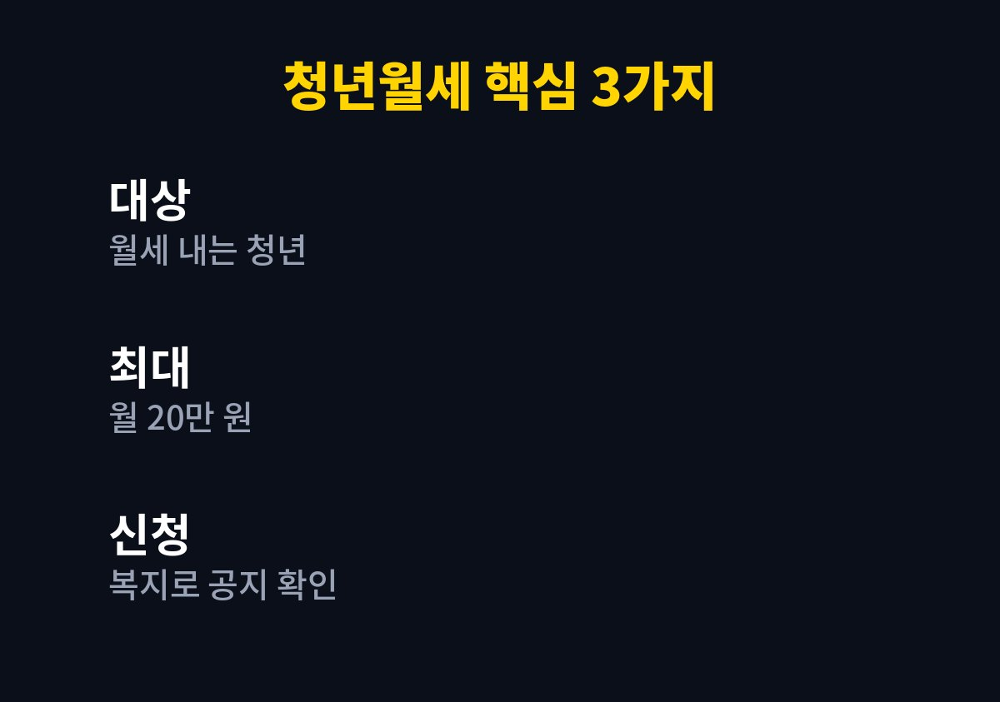
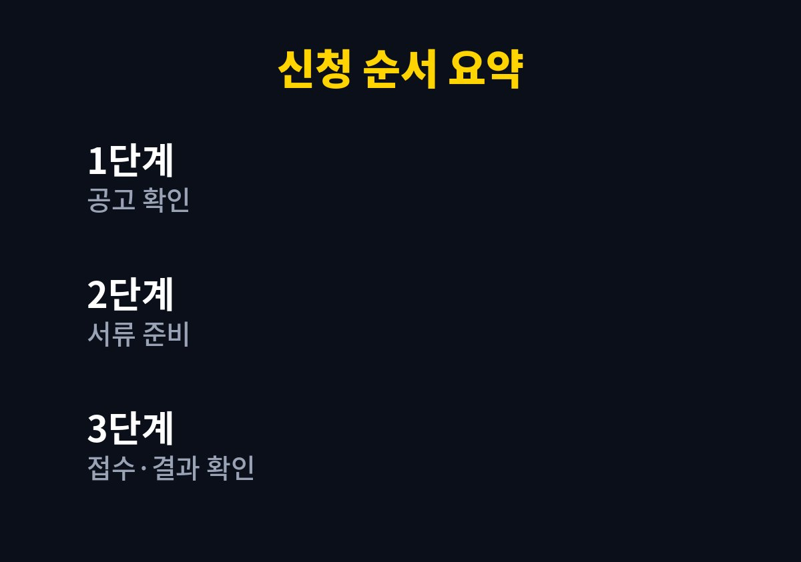

이 글은 부모님 집을 떠나 월세를 내며 혼자 사는 청년, 그리고 그런 자녀를 둔 부모님을 위해 쓴 글이다.
2026년 11월 기준으로 공개된 정보를 내가 찾아보며 정리했다.
가족과 이야기하다 월세 부담이 크다는 말이 나와서 어떤 지원이 있는지 궁금해졌다.
확인된 내용과 확인하지 못한 내용을 나누어 적었다.
청년월세 지원사업은 월세를 내는 청년의 주거비 부담을 덜어 주기 위한 제도다.
복지로에 2026년 청년월세 지원 신청 안내가 공지되어 있는 것을 확인했다.
정리한 글들을 종합하면 월 최대 20만 원이라는 숫자가 공통으로 나온다.
월세는 매달 나가는 고정비라서 작은 지원도 체감이 크다.
그런데 이런 제도는 대상이라는 사실을 모르면 신청 자체를 하지 못한다.
나이와 소득, 거주 형태가 맞물려 있어 스스로 해당 여부를 가늠하기 어렵다는 점도 한몫한다.
주거비는 한번 정해지면 줄이기 어려운 지출이라 지원 여부를 일찍 아는 것이 중요하다.
나도 두 아이를 키우며 집 문제를 자주 이야기하다 보니 청년 세대의 부담이 남의 일 같지 않았다.
일반적으로 나이, 소득, 주거 형태, 월세 계약 여부 같은 항목을 함께 본다고 정리되어 있다.
다만 구체적인 나이 범위와 소득 기준액은 내가 공식 공고에서 직접 확인하지 못했다.
그래서 이 글에서는 숫자를 적지 않고 확인하는 방법만 안내한다.
지어낸 숫자를 믿고 준비하는 것보다 공식 공고를 읽는 편이 훨씬 안전하다.
임대차 계약서에 적힌 임차인 이름과 월세 금액을 가장 먼저 확인하면 좋다.
본인 명의의 계약인지가 서류 확인에서 중요하게 쓰이는 경우가 많다.
부모님 명의로 계약된 경우에는 해당 여부가 달라질 수 있어 문의가 필요하다.
같은 월세라도 지역과 가구 사정에 따라 부담의 무게는 다르게 느껴진다.
그래서 제도를 볼 때에는 금액 자체보다 내 상황에 맞는지를 먼저 따져 보아야 한다.
확인된 숫자는 월 최대 20만 원이다.
최대 금액이라는 말은 월세 전액이 아니라 상한이 정해져 있다는 뜻이다.
실제 지급액과 지원 기간은 공고에서 정한 기준에 따라 달라질 수 있다.

| 항목 | 확인 내용 |
|---|---|
| 지원 대상 | 월세를 내는 청년(세부 요건은 공고 확인) |
| 지원 금액 | 월 최대 20만 원 |
| 신청처 | 복지로 등 공고에 안내된 접수 창구 |
| 신청 기간 | 공식 공고에서 확인 필요 |
표에서 확인하지 못한 칸은 일부러 구체적인 숫자를 적지 않았다.
이 칸들은 복지로 공지사항에서 직접 읽는 것이 가장 정확하다.
일반적으로 신분증, 임대차 계약서, 월세 이체 내역 같은 서류가 필요한 것으로 알려져 있다.
정확한 서류 목록은 공고마다 다르므로 신청 전에 다시 확인해야 한다.
월세를 이체한 기록은 미리 정리해 두면 나중에 서두르지 않아도 된다.

1. 복지로 공지사항에서 올해 청년월세 지원 안내를 찾는다.
2. 공고의 대상 조건을 읽고 나이·소득·주거 형태를 대조한다.
3. 임대차 계약서와 월세 이체 내역 등 서류를 준비한다.
4. 안내된 접수 창구에서 신청서를 제출한다.
5. 접수 결과와 지급 일정을 확인하고 기록해 둔다.
서류를 한 번에 정리해 두면 접수 과정에서 오가는 시간을 줄일 수 있다.
순서 중에서 가장 중요한 것은 두 번째 단계인 공고 확인이다.
접수 후에는 심사와 지급까지 시간이 걸릴 수 있으므로 일정을 여유 있게 잡는 편이 좋다.
결과 안내를 받은 뒤에는 지급 계좌가 맞는지 한 번 더 살펴보아야 한다.
지원금을 대신 받아 주겠다며 개인정보나 수수료를 요구하는 연락은 의심해야 한다.
공식 신청은 복지로와 같은 공공 창구에서만 하면 된다.
월세 지원은 숫자보다 먼저 내가 대상인지 확인하는 과정이 핵심이다.
이 글의 숫자도 기준 시점이 있으므로 신청 직전에 다시 맞춰 보길 권한다.
월세 부담을 혼자 감당하고 있는 청년에게 작은 길잡이가 되었으면 한다.
※ 2026년 11월 기준 공개된 정보를 정리한 글이며, 정확한 대상 요건·금액·신청 기간은 복지로·정부24·관할 주민센터의 공식 공고를 확인하시길 바란다.